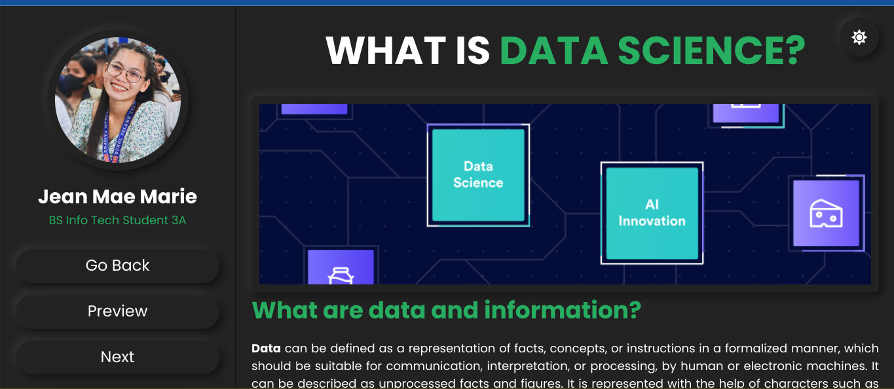
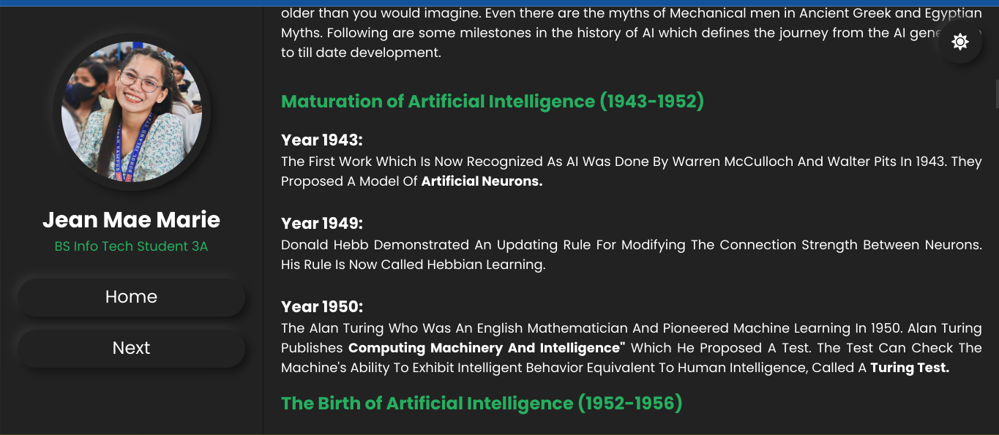

About me
Information About me
I consider myself a simple person, valuing the beauty of life's little joys and finding contentment in the simple pleasures. Being friendly and approachable is second nature to me, and I genuinely enjoy connecting with people and making them feel comfortable around me.
Family holds a special place in my heart, and I have big dreams for my loved ones. I believe in the power of strong family bonds and strive to create a nurturing and loving environment for my family members. Their happiness and well-being are among my top priorities, and I am committed to working hard to support and uplift them.
My faith in Christ is the cornerstone of my life. I have a deep, unwavering faith that provides me with strength, guidance, and comfort in all circumstances. I see Christ as my dalangpanan, my refuge, and He is with me every step of the way, especially as a student. Trusting in His plans and seeking His wisdom allows me to navigate the challenges and uncertainties of academic life with a sense of peace and purpose.
Singing is one of my greatest passions, and I find immense joy and fulfillment in using my voice to praise and worship God. I am honored to serve as a praise and worship leader in our church, where I lead the congregation in songs of adoration and gratitude. This role not only allows me to express my love for music but also enables me to inspire and uplift others through the power of worship.
I am Jean Mae Marie Bulacoy, a 21-year-old individual who embraces simplicity and cherishes meaningful connections with others. Family is at the core of my dreams and aspirations, and my Christian faith, deeply rooted in my relationship with Christ, guides me through every aspect of life, particularly as a student. Singing holds a special place in my heart, and I am privileged to use my voice as a praise and worship leader, spreading the message of love and devotion through music within my church community.
My Skills
My Timeline
2023 - present
Bohol Island State University
(Magsija, Balilihan, Bohol)
Bachelor of Science in Information Technology
2019-2020
Congressman Pablo Malasarte NHS
(Cabad, Balilihan, Bohol)
Graduate- With Honor
2013-2014
Balilihan Central Elementary School
(Del Carmen Weste, Balilihan, Bohol)
Graduate- Most Behave
My Portfolio
Curriculum Vitae
A curriculum vitae (CV), often referred to as a resume. This document provides a summary of my background, education, work experience, skills, achievements, and qualifications.
Photo Blog
It is just a very simple portfolio site, nothing fancy at all. The images will resize according to the size of your screen.
Midterm Exam
Bootstrap
This activity is about bootstrap. Its definition, reason why bootstrap is necessary in web projects, and some examples of website that currently using bootstrap.
Boostrap Basics
A simple website applying the basics of bootstrap.
My Projects
Here is some of my work that I've done in various programming languages.
This project is centered around applications development and emerging technologies, and it involves the creation of a web journal that serves as a comprehensive collection of all the topics discussed. The journal covers a wide array of subjects, including AI, data science, augmented reality, the Internet of Things, and various other emerging technologies.


Contact Me
Contact me here
The following contact information can be used to reach me:
: Del Carmen weste, Balilihan, Bohol
: bulacoyjeanmaemarie@gmail.com
: Bohol Island State University
: 09636929031
: Bisaya, English, Tagalog